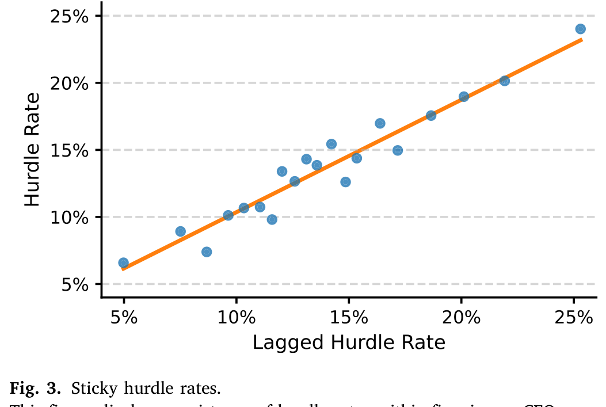
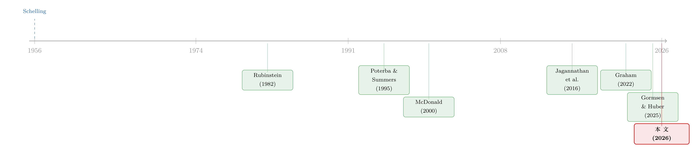

把「门槛」抬高，是为了在谈判桌上赢回来——重新理解企业为何固守过高的内部收益率
本文读的是 Barry, Carlin, Crane & Graham (2026, Journal of Financial Economics)：CFO 们普遍把投资的「门槛收益率（hurdle rate）」定在远高于资本成本的位置——平均高出 6.6 个百分点。教科书说这会让公司错过正 NPV 的项目、白白「把钱留在桌上」。但这篇论文反过来论证：正因为这个被抬高的门槛是一种可信承诺（commitment），它在公司与交易对手谈判时反而能多分到一块蛋糕；这块议价收益往往足以盖过错过项目的损失，从而保住甚至提升了公司价值。
1 一个困扰了三十年的悖论
先抛一个让任何学过公司金融第一课的人都会皱眉的事实。
教科书是这么教的：一个项目值不值得做，看它的 NPV（净现值）是否为正；而 NPV 用什么贴现？用公司的加权平均资本成本（weighted average cost of capital, WACC）。逻辑干净利落——只要项目回报率超过 WACC，就该做；用任何高于 WACC 的「门槛」去筛项目，都会错杀一批本该赚钱的正 NPV 项目，是在主动毁灭价值。
可现实呢？现实是几乎所有人都在「犯错」，而且犯了几十年。
这篇论文用六轮 CFO 调查（Duke 大学主持，跨越 2011 到 2022）给出了一组扎实的数字：78% 的公司使用了高于资本成本的门槛收益率；在这些公司里，平均的门槛缓冲（hurdle rate buffer）高达 6.6 个百分点。具体到水平上，有缓冲的公司平均门槛率是 14.73%，而它们自报的 WACC 只有 8.15%——门槛几乎是资本成本的一倍。更要命的是，这个缺口并不随利率环境变化而消失，往前追溯到 1980 年代，它稳定得惊人。
如果这真是个错误，那它就是一个被无数受过良好训练的财务高管、跨越三十年、反复犯下的同一个错误。这就太可疑了。
这个缺口有多贵？论文算了一笔账：在永续现金流的设定下，每一块钱的永续现金流，用 14.73% 的门槛贴现只值 $6.79，而用 8.15% 的资本成本贴现值 $12.27。也就是说，单看资本预算这一环，抬高门槛意味着把项目价值砍掉了约 45%。代价不可谓不大。
代价这么大，行为却这么顽固。首先要问的，自然是：这到底是不是一个错误？
过去几十年里，文献给出过一长串「这不是错误，而是有苦衷」的解释——融资约束、特质性风险、对真实资本成本的不确定、企业内部的代理问题、经理人时间精力有限、实物期权……每一种都能解释「为什么门槛会被抬高」。但接着，一个更自然的问题是：就算抬高有这样那样的理由，抬高之后呢？公司错过了那些回报率介于 WACC 和门槛之间的「中等正 NPV」项目，价值真的就这样漏掉了吗？
这篇论文真正不一样的地方，正是在这里给出了一个反转。
2 真正关键的一步：把门槛当成谈判桌上的「自缚双手」
真正关键的一步在于，作者们指出了一个被教科书悄悄抹掉的区别：项目评估（project evaluation） 不等于 项目开发（project development）。
教科书里的资本预算是「项目评估」：投入成本 \(C_0\) 是外生给定的，你只需要拿回报率去和门槛比大小。但真实世界里的投资是「项目开发」——成本本身是谈出来的。要建一座新厂，你得买地；地的价格不是天上掉下来的固定数字，而是你的经理人和地主讨价还价的结果。投资成本在项目开发中是内生的。
一旦成本可以谈，那么「你愿意出多高的价」就直接取决于「你的底线在哪里」。而这,恰恰是门槛收益率可以做文章的地方。
设想一家公司把门槛率定在 14.73%，并且——这是承诺机制的核心——这个门槛是由 CFO（总部）自上而下下达的，一线经理人不加质疑地接受、把它当成不可逾越的红线。论文的调查证据显示，门槛率在 96.2% 的公司里都由高层管理者设定，中层经理人参与设定的只占 3.8%；而且它在公司内部高度黏滞、代代相传，久而久之就成了员工眼中「神圣不可侵犯」的基准。
于是奇妙的事情发生了：当经理人带着「回报必须超过 14.73%」这条铁律去和地主谈判时，他不是不想成交，而是不能接受一个会让回报跌破门槛的价格。这等于公司当着对手的面把自己的手绑了起来——「我开的这个价，不是我小气，是我们公司的规矩，我做不了主」。对手心里清楚，再磨也磨不出更高的价，只能让步。
这就是 谢林（Schelling, 1956）那个著名的谈判洞见：在讨价还价中，主动削弱自己的选择权，反而能增强自己的力量。把决策权委托给一个「无法再让步」的代理人（delegated bargaining），是一种可信承诺。门槛收益率，就是企业内部最常见、最廉价、也最不起眼的一种承诺装置。
论文反复强调一个让人安心的点：这个故事不要求门槛是出于「战略性谈判」动机才被抬高的。哪怕公司纯粹是因为融资约束、特质风险这些「非战略」的传统理由把门槛抬上去，只要门槛被当成红线遵守，它就顺带带来了议价好处。所以这篇论文不是来和已有解释打擂台、抢「再添一种理由」的位子；它是说——无论你为什么抬高门槛，抬高这件事本身在谈判桌上有它独立的回报。这也顺势解释了为什么缓冲能如此顽固地长期存在。
然后，顺着这个核心idea往下推，会得到一串可以拿数据检验的预测。论文沿三条线一一验证。
3 识别策略与数据：三套互补的证据
要给「门槛缓冲 = 议价承诺」这个故事找证据，难点在于：议价能力和谈判结果都不好观测。作者用了三套数据，各自补上一块拼图。
第一套：CFO 调查。 六轮 Duke CFO 调查（2011q1、2012q2、2017q2、2017q3、2019q1、2022q2）直接问 CFO 两个数：你公司的 WACC 是多少？你公司的门槛率是多少？两者之差就是缓冲。调查的好处是直接从财务一把手口中拿到精确定义的变量，不必像市场数据那样去推断或近似。全样本里门槛率均值 13.88%、WACC 均值 8.77%，缓冲约 5 个百分点。
第二套：并购（M&A）交易数据。 为什么并购是理想试验场？因为在并购里，议价能力是核心（Ahern, 2012），而且我们既能看到谈判结果（溢价、宣告收益），又能看到谈判时用的门槛率——后者可以从交易的公平意见书（fairness opinion）里披露的贴现率数据中读出来，Dessaint 等（2021）已经证明这个贴现率可靠地度量了收购方的门槛率。
第三套：供应商—客户关系数据（FactSet Revere）+ Compustat。 用上下游关系构造公司相对于交易对手的事前议价优势度量，再用 Compustat 算出公司投资资本回报率（return on invested capital, ROIC）作为「已实现回报」的代理。单位观测是公司（部分分析下到公司—年）。
接下来逐条看结果。
4 主要结果：从黏滞的门槛，到并购桌上的真金白银
4.1 门槛是黏的，而且回报会「贴着门槛」分布
承诺机制要成立，第一前提是门槛得稳。论文先用一张图把「门槛黏滞」钉死：把当期门槛率对滞后门槛率做分箱散点回归（控制 beta 波动率、销售波动率，以及行业、年份、规模固定效应），斜率约为 0.84。也就是说，去年的门槛能解释今年门槛的绝大部分——它几乎是公司的一个固定特征。

Figure 3: explores the degree of persistence in our data. Analyzing
承诺成立的第二个、也是更巧妙的证据，藏在已实现回报的分布形状里。如果门槛真的主导着项目开发，那些回报率「刚好卡在门槛附近、甚至略低于门槛」的边缘项目，经理人就有强烈动机去把它们「推过线」——通过在投入成本上多砍一刀（也就是本文的议价机制），或者别的方式。结果应该是什么？是已实现回报的分布会在门槛正上方堆出一团多余的质量（excess mass），而门槛正下方则被掏空。
论文用 ROIC 减去对应门槛后的「超额 ROIC」密度图证实了这一点：质量从门槛正下方被搬到了门槛正上方，分布在零（即恰好达到门槛）的右侧出现可见的聚集。这是一种典型的「达标或超标（meet or beat）」行为——和盈余管理里企业拼命让 EPS 刚好达到分析师预期是同一种心理。

Figure 4: displays the density of excess ROIC centered at zero. The
这张图的说服力在于：它把一个原本只在 CFO 嘴里的「门槛」，和会计上真实发生的回报分布对上了号。门槛不是写在 PPT 上的摆设，它实实在在地塑造了公司最终交出的成绩单。
4.2 并购桌上：用了缓冲的收购方，少付了溢价、多赚了收益
这是全文最硬的一组结果，因为它直接对应「议价」。
把并购交易里收购方用的门槛缓冲，和谈判结果放在一起回归，论文发现：
- 缓冲越大，支付给目标方的溢价显著越低——统计上显著为负。这正是「绑住手反而压低了对手要价」的直接体现。
- 缓冲越大，收购方的累计异常收益（cumulative abnormal return, CAR）显著越高；目标方 CAR 则为负（但不显著）。
- 关键的反证：收购方+目标方的合并 CAR 与缓冲无关。
最后这一条至关重要，值得停下来品一品。如果用缓冲的收购方只是碰巧挑中了协同效应更好的标的，那合并 CAR（衡量交易创造的总价值）应该随缓冲上升。但它没动。这说明缓冲带来的收益不是把蛋糕做大，而是把同样大的蛋糕里收购方那一块切得更大——这恰恰是「更强的议价」而非「更好的项目」的指纹。
4.3 横截面：本来就强势的公司，反而不爱用缓冲
模型还有一个微妙的、甚至有点反直觉的预测：如果一家公司在和上下游谈判时本来就占据强势地位，它就没那么需要靠抬高门槛来人为制造议价优势——边际收益递减。
用 FactSet Revere 的供应商—客户关系数据构造事前议价优势后，论文确认：缓冲的使用与公司相对于 (1) 供应商、(2) 客户、(3) 供应商—客户相对加价（markup）的事前议价优势负相关。而且——这是漂亮的安慰剂式检验——这种负相关在最可能需要谈判的资产类别（比如不易再配置、redeployability 低的资产）里最强。越是需要讨价还价的地方，门槛缓冲这件「武器」越管用，公司也越会用它。
5 理论模型：被委托的谈判，与那一笔价值的取舍
这篇论文有一个完整的委托谈判（delegated bargaining）模型，支撑起前面所有的实证预测。这里把它的逻辑骨架一步步讲清楚。
设定。 组织结构是分权的：CFO（总部）负责上报门槛率，经理人负责开发项目、并与交易对手就投入成本讨价还价。经理人把 CFO 下达的门槛当成不可renegotiate的硬约束——这正是 Jones (1989)、Fershtman 等 (1991)、Segendorff (1998) 那一类「可观测的委托契约能改变谈判均衡」的结构。
核心机制与一个反转。 在经典的 Rubinstein (1982) 序贯谈判模型里，一方的贴现率越高（越「等不及」），它分到的剩余越少——急着成交的人吃亏。本文的直觉恰好相反：把门槛（可类比为一个被抬高的内部贴现率）调高，会抬高这一方被对手感知到的「走开价值（walkaway value）」，因为它的外部选项显得更值钱了。于是对手必须让步，这一方分到的剩余反而更多。门槛在这里不是「不耐烦」，而是「我有更好的别处可去」的可信信号。
那笔取舍。 但抬高门槛不是免费的午餐。门槛越高，公司就会放弃越多回报率介于 WACC 和门槛之间的「中等正 NPV」项目——这是放弃项目的损失。模型的核心结论，是一个均衡的权衡：
$$\underbrace{\text{Gains from greater bargaining power}}_{\text{more surplus on deals you } \textit{do} \text{ make}} \;\;\gtrless\;\; \underbrace{\text{Losses from forgone moderate-NPV projects}}_{\text{deals you } \textit{don't} \text{ make}}$$
只要左边盖过右边，抬高门槛在净额上就创造价值；门槛缓冲也因此能在均衡中长期持续。论文的命题表明，对相当大的参数区间，这个不等式确实朝左边倾斜。
要把「放弃项目的代价」量化，最透明的就是论文用的永续现金流估值。把同一块永续现金流分别用门槛率和资本成本贴现，价值的鸿沟一目了然：
a1 | 用被抬高的门槛率 14.73% 贴现一块钱永续现金流，只值 $6.79 a2 | 用真实资本成本 WACC 8.15% 贴现同一笔现金流，值 $12.27 a3 | 两者之差让项目估值缩水约 45%——这正是抬高门槛在「项目评估」一侧付出的代价，必须靠「项目开发」一侧的议价收益赚回来
这条不等式，把全篇的张力压缩成了一个数字游戏：左边是看得见的、教科书痛心疾首的 45% 价值流失；右边是看不见的、却在并购溢价和 ROIC 分布里留下指纹的议价收益。论文的全部工作，就是论证右边并不小，甚至常常更大。
（顺带一提，这一整套「该用什么贴现率」的争论，本身就是资产定价的中心议题之一——关于贴现率为何如此重要，可参见《贴现率：资产定价的中心议题》。）
6 文献脉络：从「门槛之谜」到「门槛之用」
把这篇论文放回它生长的脉络里，会看得更清楚。
最早，门槛率高于资本成本这件事就被发现了。Poterba 和 Summers (1995) 调查了 Fortune 1000 的 CEO，发现门槛率常常既高于股东的平均回报率、也高于债务成本——「门槛之谜」由此立案。

接着，文献开始为这个谜「找苦衷」。Harris 和 Raviv (1996) 从内部资本配置的代理问题出发，论证总部抬高门槛是为了对冲过度乐观或想「做大摊子」的经理人；他们随后 (1998) 进一步讨论资本预算中的委托问题。Chen 和 Jiang (2004) 证明，即便没有信息不对称，只要经理人需要付出不可契约化的努力去收集信息，门槛也会被抬高。McDonald (2000) 则给出一个很不一样的、和价值挂钩的机制：抬高的门槛是近似求解实物期权的一条经验法则——本文在文献里最像的「前辈」，正是 McDonald，因为他也认为缓冲可能是有益的，只不过机制完全不同。
然后，更晚近的工作把谜做得更精细。Jagannathan 等 (2016) 用调查数据指出缓冲源于经理人/资源约束，并量化了门槛与 WACC 的楔子；Décaire (2024) 把缓冲归因于特质性风险；Bessembinder 和 Décaire (2021) 说贴现率的不确定会高估 NPV；Gormsen 和 Huber (2025) 用财报电话会议披露的贴现率，记录了门槛与资本成本之间随时间变化的楔子，并发现缓冲和投资负相关。
这篇论文所处的位置，是在这条「为缓冲找理由」的长链条之后，换了个问题：不再追问「为什么抬高」，而是问「抬高之后，在谈判桌上发生了什么」。它把谢林（Schelling, 1956）和 Rubinstein (1982) 的谈判理论，嫁接到资本预算这件最日常的公司财务实践上，于是「门槛之谜」变成了「门槛之用」。
7 评论与延伸（Q&A + 研究方向）
(a) 几个可能的疑问
Q：这套故事会不会只是把「公司本来就强势」反过来讲了一遍？强势公司谈判赢，跟门槛有什么关系？
恰恰相反，论文的横截面证据是反着来的：事前越强势的公司越不用缓冲。如果只是「强者恒强」，我们会看到强势和高缓冲同时出现；而数据显示二者负相关。这说明缓冲是给那些议价不占优、需要人为制造承诺的公司用的工具，而不是强势本身的副产品。
Q：并购里收购方少付溢价，会不会只是它们运气好、挑中了协同更差但要价更低的烂标的？
这正是「合并 CAR 与缓冲无关」这一条要排除的。如果是挑中了不同质量的标的，交易创造的总价值（合并 CAR）应该随缓冲变化。它没变，说明蛋糕一样大，只是收购方切走的份额更大——是议价，不是选标的。
Q：ROIC 在门槛正上方堆积，会不会是盈余管理或会计操纵，而非真实的「谈判压成本」？
论文也承认 ROIC 是公司所有项目的加总、并非项目级回报，这是它诚实标注的局限。但这团聚集与「达标或超标」的承诺机制一致，且与门槛黏滞、并购议价两条独立证据相互印证。是不是纯靠会计做出来的，确实值得未来用项目级数据进一步分辨——这也是它留下的口子。
Q：教科书真的「错」了吗？45% 的估值缩水是实打实的损失啊。
论文没有说教科书的算术错，而是说教科书的适用范围被默认得太宽了。当投入成本外生（纯项目评估），抬高门槛确实毁价值；可一旦成本是谈出来的（项目开发），门槛就多了一重谈判功能。
45%的缩水是真损失，但它要和被它换来的议价收益net一下，才是公司真正关心的那个数。
Q：为什么是 CFO 自上而下定门槛、而不是让最懂项目的一线经理人来定？这不浪费信息吗？
「浪费信息」恰恰是承诺的代价，也是它之所以可信的来源。如果一线经理人能随项目灵活调门槛，对手就知道这条线是可以磨的，承诺就不可信了。门槛之所以「神圣不可侵犯」、有谈判力，正因为它被刻意地从一线手里拿走、变得僵硬——黏滞和「不讲道理」是 feature，不是 bug。
Q：这和「沉没成本」「实物期权」那些解释到底是竞争还是互补？
论文把话说得很清楚：是互补，不是竞争。它不否认融资约束、特质风险、实物期权（McDonald, 2000）等任何传统理由把门槛抬上去；它只是补上了「抬上去之后，谈判桌上还有一笔额外回报」这一层，从而解释了为什么这么贵的缓冲能几十年不倒。
(b) 几个可能的研究问题与提案
提案一：门槛缓冲与公司债发行的「议价」。 【经济故事】债券发行（尤其是私募、银团贷款）本质也是一场议价：发行人、承销商、投资者三方就票面利率和条款讨价还价。如果公司能用某种「内部红线」承诺（比如对融资成本设上限），它会不会在和投资者谈条款时压低利差？门槛缓冲的逻辑可以平移到信用市场的负债端。 【可行性】中。需要把 CFO 调查的门槛/缓冲数据，与 Mergent FISD 的债券发行条款、二级市场利差对接；识别难点在于门槛与发行时机内生，可考虑用行业—年份层面的门槛黏滞作为相对外生的变异来源。doable 但样本匹配是瓶颈。
提案二：外资持有人与议价承诺的互动。 【经济故事】当公司的边际投资者是外资（信息劣势、协调成本更高）时，公司「自缚双手」的承诺对外资交易对手是否更有效、还是因为外资不熟悉这套规矩而失效？这关系到外资持有结构如何改变公司的谈判地位。 【可行性】中偏低。需要把门槛缓冲与 FactSet/13F 的外资持有比例、以及跨境并购样本结合。识别上较难，外资持有本身和公司治理高度内生，可能需要指数纳入这类外生冲击作为工具。诚实地说，是个有意思但不容易做干净的方向。
提案三：门槛黏滞与流动性冲击下的投资扭曲。
【经济故事】门槛是黏的（斜率 0.84），那么当资本成本因流动性冲击骤降时，黏滞的门槛会让缓冲被动放大，公司错杀的项目更多。这能不能解释货币宽松向实体投资传导的「钝化」？把本文的黏滞和 Gormsen-Huber (2025) 的时变楔子接起来很自然。
【可行性】高。Gormsen-Huber 已用财报电话会议提取了大样本、时变的贴现率；叠加货币政策冲击（高频识别）即可检验门槛黏滞如何调节投资对资本成本的敏感度。数据现成，识别策略成熟，最 doable。
提案四：资产可再配置性（redeployability）作为缓冲收益的调节变量。 【经济故事】论文已发现缓冲的议价收益在「不易再配置」的资产上最强。能否把它做成一个连续的横截面检验：用资产可再配置性指数，看缓冲—溢价、缓冲—CAR 的关系如何随之单调变化？这能把「门槛=议价工具」的机制钉得更死。 【可行性】高。可再配置性指数（如 Kim & Kung 风格）可从 Compustat/BEA 投入产出表构造，并购样本和门槛数据本文已有，属于在现成框架内加一层交互项，doable。
我的判断
这篇论文最漂亮的地方，是用一个「区分项目评估与项目开发」的小切口，把一个被诟病三十年的「行为异象」翻译成了一个理性的、可创造价值的承诺策略。它没有去和已有的十几种解释抢地盘，而是退一步说「无论你为什么抬高门槛，抬高本身在谈判桌上有回报」——这种谦逊反而让它的贡献更稳健、覆盖面更广。三套证据（黏滞、ROIC 聚集、并购议价）相互独立又彼此印证，尤其是「合并 CAR 与缓冲无关」这条反证，是把「议价」从「选好标的」里干净剥离的关键一笔。
对识别，我有两点保留。其一，ROIC 是公司层面所有项目的加总，用它来论证项目级的「贴着门槛聚集」，中间隔着一道不小的加总鸿沟，聚集形状也可能掺入会计平滑或盈余管理——这部分的证据是 suggestive 的，而非决定性的。其二，并购里门槛缓冲与溢价、CAR 的关系都建立在「公平意见书贴现率可靠度量收购方门槛」这一前提上；虽有 Dessaint 等 (2021) 背书，但这个度量本身可能与交易特征内生（比如难谈的标的会让收购方在意见书里报更高的贴现率），需要更强的外生变异来彻底打消顾虑。
后续我最想看到的，是项目级或交易级的成本数据：如果能直接看到「用了高门槛的公司，确实在投入成本（买地、设备采购价、并购对价的成本端）上砍得更狠」，那么这条从门槛到议价到成本的链条就被完整地焊死了。在那之前，这篇论文已经足够说服我重新看待办公桌上那条「神圣」的门槛线——它也许不是财务部门的固执，而是一件被精心绑紧、专门拿到谈判桌上用的武器。
参考文献
- Ahern, K.R. (2012). Bargaining power and industry dependence in mergers. Journal of Financial Economics 103(3), 530–550.
- Barry, J.W., Carlin, B.I., Crane, A.D., Graham, J.R. (2026). Hurdle rate buffers and bargaining power in asset acquisition. Journal of Financial Economics 178, 104240.
- Bessembinder, H., Décaire, P. (2021). Discount rate uncertainty and capital budgeting.
- Chen, H., Jiang, W. (2004). Capital budgeting and information acquisition.
- Décaire, P. (2024). Capital budgeting and idiosyncratic risk.
- Dessaint, O., Olivier, J., Otto, C.A., Thesmar, D. (2021). CAPM-based company (mis)valuations. Review of Financial Studies 34(1), 1–66.
- Fershtman, C., Judd, K., Kalai, E. (1991). Observable contracts: Strategic delegation and cooperation. International Economic Review 32(3), 551–559.
- Gormsen, N.J., Huber, K. (2025). Corporate discount rates. American Economic Review 115(6), 2001–2049.
- Graham, J.R. (2022). Presidential address: Corporate finance and reality. Journal of Finance 77(4), 1975–2049.
- Harris, M., Raviv, A. (1996). The capital budgeting process: Incentives and information. Journal of Finance 51(4), 1139–1174.
- Harris, M., Raviv, A. (1998). Capital budgeting and delegation. Journal of Financial Economics 50(3), 259–289.
- Jagannathan, R., Matsa, D.A., Meier, I., Tarhan, V. (2016). Why do firms use high discount rates? Journal of Financial Economics.
- McDonald, R.L. (2000). Real options and rules of thumb in capital budgeting. In Project Flexibility, Agency, and Competition. Oxford University Press, pp. 13–33.
- Poterba, J.M., Summers, L.H. (1995). A CEO survey of US companies' time horizons and hurdle rates. MIT Sloan Management Review 37(1), 43.
- Rubinstein, A. (1982). Perfect equilibrium in a bargaining model. Econometrica 50(1), 97–109.
- Schelling, T. (1956). An essay on bargaining. American Economic Review 46(3), 281–306.
- Segendorff, B. (1998). Delegation and threat in bargaining. Games and Economic Behavior 23(2), 266–283.